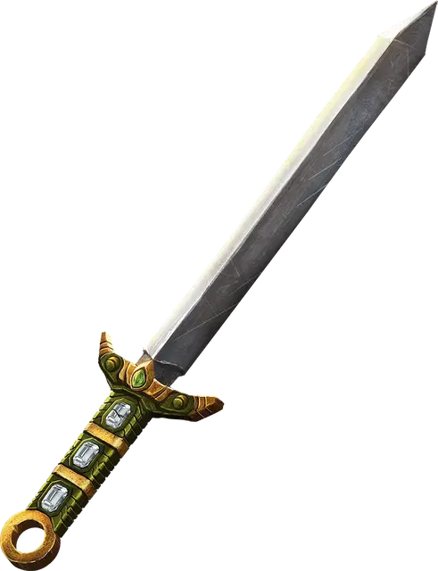

Клинок удачи
Luck Blade
Оружие (любой меч), легендарное (требуется настройка)

Рекомендованная стоимость от 50 001 зм
Вы получаете бонус +1 к броскам атаки и урона, совершённым этим магическим оружием. Пока это оружие находится у вас, вы также получаете бонус +1 к спасброскам.
Удача. Если этот меч находится у вас, вы можете воззвать к его удаче (действие не требуется), чтобы перебросить один бросок атаки, проверку характеристики или спасбросок, который вам не понравился. Вы обязаны использовать результат второго броска. Это свойство нельзя использовать повторно до следующего рассвета.
Исполнение желаний. У меча есть 1к4 − 1 заряд. Если вы держите его, вы можете действием потратить 1 заряд, чтобы наложить им заклинание исполнение желаний [wish]. Это свойство нельзя использовать повторно до следующего рассвета. Меч теряет это свойство, когда у него не останется зарядов.